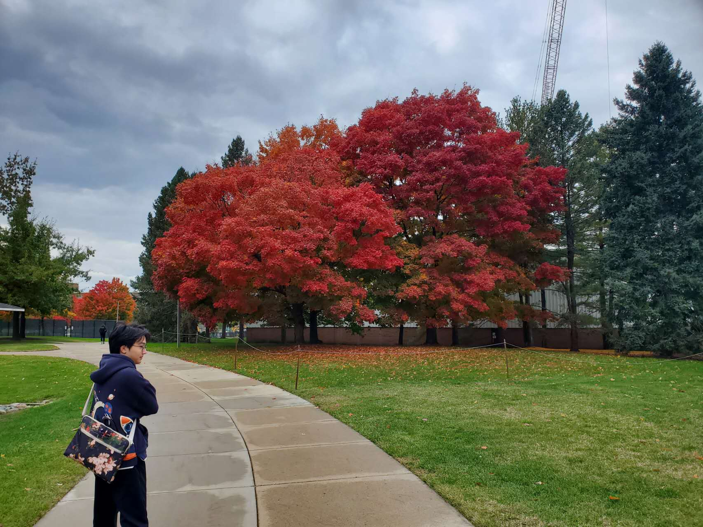

Hong Zhuang
Machine Learning Engineer · Multimodal LLM Training & Acceleration
About Me
Hi, I’m Hong Zhuang — an MSc Informatics student at the Technical University of Munich (TUM). I work on training, scaling, and accelerating large multimodal and reinforcement-learning models.
Most recently at Huawei’s Ascend Model Platform, I drove long-sequence parallel optimization for the Wan2.1 14B text-to-video model — a joint innovation with JD — cutting GPU usage by 75% and memory by 50%. Earlier, I co-built a real-time firearm detection system at Moii.AI that won the Amazon Sigma Award.
I’m currently open to internships in model engineering, algorithm deployment, and model acceleration.
Bio
Professional Skills
Work Experience
Focused on multimodal LLM training and inference acceleration — cross-chip adaptation (GPU → Ascend NPU), sequence parallelism, and full-parameter RL training on multi-NPU clusters.
- Designed and implemented a long-sequence parallel feature that cut training scale by 75% and memory by 50%, unlocking longer sequences on the same hardware.
- Led GPU→Ascend NPU porting of GRPO RL stacks built on TRL and verl, owning end-to-end debugging across training, inference, tuning, and deployment.
- Built and maintained efficient dev / test / deployment environments spanning NPU and GPU.
Designed and built ML inference APIs for real-time threat detection on images, videos, and live streams. Trained YOLOv8 and tuned SAHI’s adaptive tile sizing for small-object detection — improving accuracy by 30% and inference speed by 200%. Collaborated with the team through regular code reviews on system architecture, performance, and cost.
Education
Publications
Proposed an enhanced DeblurGAN architecture that combines low-light enhancement with motion-blur removal, improving deblurring quality in low-illumination photography compared with prior single-purpose GAN baselines.
Portfolio
Wan2.1 14B
Sequence-Parallel Training
Distributed Training / DeepSpeed-Ulysses / Multimodal / Text-to-Video
Wan2.1 14B Long-Sequence Parallel Optimization
Joint innovation project with JD: adapted and optimized the Wan2.1 14B text-to-video model on Ascend NPU clusters. Through memory profiling, designed and implemented a DeepSpeed-Ulysses sequence-parallel strategy that enabled 32K-sequence training on 8 NPUs instead of 32 — cutting training nodes by 75% and memory usage by 50%, while unlocking longer sequences on the same hardware. Built on ModelScope’s DiffSynth-Studio.
Computer Vision / YOLOv8 / SAHI / FastAPI / Google Cloud
Real-time Firearm Detection & Early-Warning System
Built a web system letting users plug in their camera live streams for real-time threat detection, focused on small objects like firearms. Trained YOLOv8 and tuned SAHI’s adaptive tile sizing — accuracy +30%, inference +200%. Deployed model and APIs on Google Cloud Compute Engine; emergency email alerts trigger on threat detection. Winner of the Amazon Sigma Award (1st of 30 teams).
Weakly-Supervised
Action Recognition
Weakly-Supervised TAL / Multimodal / I3D / Research
Multimodal Weakly-Supervised Action Recognition for Medical Exams
Undergraduate research assistant project. Built a SOTA weakly-supervised temporal action localization (WTAL) multimodal model that leverages textual cues to boost recognition of medical students’ practical-exam actions. Extracted optical flow and RGB features from ~9,000 videos (> 1.2 TB) using I3D and trained on 4× NVIDIA RTX A6000 GPUs — reaching 92.75% accuracy and 94.88% ROC-AUC.